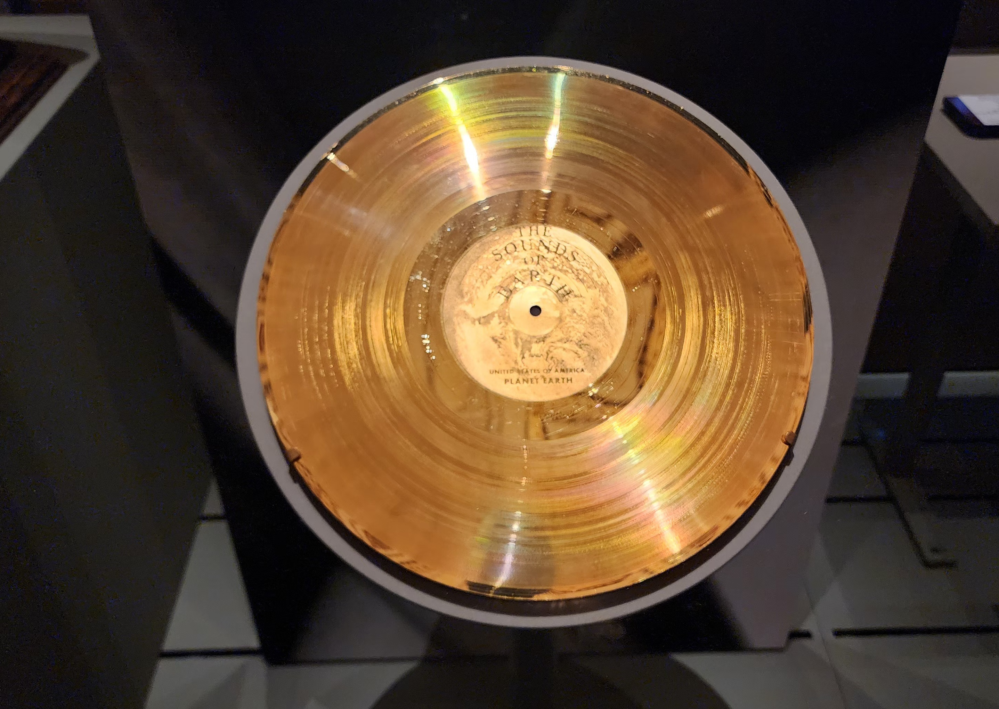

Scrolling through my Google feed today, a headline caught my eye: “NASA’s Voyager Spacecraft Found A 30,000-50,000 Kelvin ‘Wall’ At The Edge Of Our Solar System.” My first thought? “Clickbait! This has to be some kind of exaggeration, if not outright fake news.” After all, 50,000 Kelvin is a temperature usually reserved for the heart of stars, not the cold, empty vacuum of space. So, I did what any curious mind with an AI assistant would do: I asked Claude Sonnet 4 to verify it, specifically checking against official NASA press releases, blogs and scientific papers.
To my astonishment, Claude confirmed the article’s core claims with high credibility, citing reputable sources like NASA.gov, JPL.nasa.gov, and even peer-reviewed publications. The Voyager spacecraft, or the robotic pioneers launched way back in 1977, did indeed measure extremely high temperatures—ranging from 30,000 to 50,000 Kelvin (that’s 54,000-90,000°F!) at the heliopause, the very edge of our solar system’s protective bubble.
So, what exactly is this “wall of fire” and how did we stumble upon it? Our Sun is blowing out a stream of charged particles, called the solar wind. This wind creates a giant, invisible bubble around our entire solar system, known as the heliosphere, extending about 120 times farther than Earth is from the Sun (that’s 11.2 billion miles!). Everything we know, from Earth to Pluto, resides inside this bubble. At its distant edge, this solar wind slams into the interstellar medium the thin gas and dust between stars. This cosmic collision forms a boundary zone, the heliopause, which the Voyager spacecraft have now successfully crossed.
How Far is the “Wall of Fire” from the Sun?
The Numbers:
- Distance: About 120 AU from the Sun
- In miles: 11.2 billion miles
- In kilometers: 18.0 billion kilometers
(AU = Astronomical Unit = distance from Earth to Sun = 93 million miles)
Putting This in Perspective:
Compared to familiar distances:
- Earth to Sun: 1 AU
- Sun to Pluto: ~40 AU
- Sun to Heliopause: ~120 AU
So this “wall of fire” is:
- 120 times farther than Earth is from the Sun
- 3 times farther than Pluto!
The “fire” isn’t literal, of course; there’s no oxygen for combustion in space. Instead, the astonishing temperature refers to the kinetic energy of the extremely sparse particles at this boundary. Voyager 2’s Plasma Science Experiment (PLS), which is one of its experiment module, measured the speed and energy of individual particles. The faster these particles jiggle and move, the higher their inferred temperature. While each particle is incredibly energetic, space at this frontier is so empty that there aren’t enough of them to transfer significant heat to the spacecraft itself. It’s like being pelted by a handful of super-hot grains of sand – individually scorching, but collectively not enough to burn you.
What truly fascinates me about this discovery, beyond the sheer scale of the numbers, is how it highlights the nuances and challenges of the scientific process. When I first read the blog, my immediate thought was, “Voyager is just a tiny speck, a single point of measurement. How can scientists possibly extrapolate that the entire 240 AU-wide heliopause has this uniform temperature?” This is the question that gets to the heart of scientific validity. Yes - it is a significant limitation.
Scientists do acknowledge this. We currently have direct measurements from only two points - where Voyager 1 and Voyager 2 crossed the heliopause, separated by about 2.6 AU, which is still a tiny fraction of the boundary’s vastness. Drawing conclusions about the entire heliopause from these two data points is akin to taking the temperature in Montauk, New York City, and declaring it’s the uniform temperature of the entire Earth. So, how do they justify it? They rely on theoretical models, the agreement between the two Voyager measurements, and indirect observations from other missions (like IBEX - Interstellar Boundary Explore - a space observatory designed to study the far reaches of our solar system from orbit focused on mapping the edge of our solar system). However, they also admit that their initial models predicted a temperature nearly half of what Voyager actually measured (15,000-30,000K vs. 30,000-50,000K), indicating that our understanding of this boundary is still evolving.
The higher-than-predicted temperature suggests that processes like compression heating and complex magnetic field interactions at this boundary are more significant than previously thought. The honest scientific position is that while we’ve measured these temperatures at two specific points, and they align with revised theoretical explanations, we don’t truly know if this temperature is uniform across the entire heliopause, or if it varies significantly in other regions or over time due to solar activity. Sending more probes in different directions would be ideal, but the practical realities of time (40+ years to reach the heliopause), cost (billions of dollars per mission), and engineering challenges make comprehensive mapping incredibly difficult.
Ultimately, the Voyager missions represent an unparalleled achievement in human exploration. They are our first and so far, only—ambassadors beyond our solar system’s protective bubble. While the “wall of fire” might be a dramatic nickname, the underlying scientific discovery is genuinely astounding: our solar system is not simply fading into empty space but is encased in a dynamic, incredibly energetic boundary. This journey of discovery, fueled by decades-old technology, continues to push the boundaries of our knowledge, reminding us that the universe always holds surprises, and the scientific process is a continuous dance between observation, prediction, and revision.
 P.S :
During my visit to DC, I went into an exposition - “Collecting Memories: Treasures from the Library of Congress” held at the Library of Congress, I captured an image of the Voyager Golden Record - above. The record The Sound of Eath, is on both the Voyagers. This replica is sourced from the library’s archives.
This is fascinating. I am goint to read more about the Voyager missions